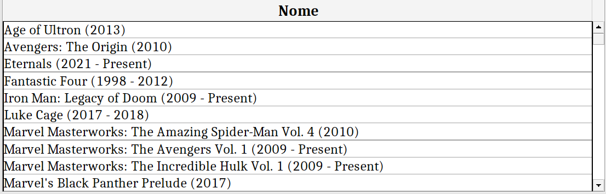
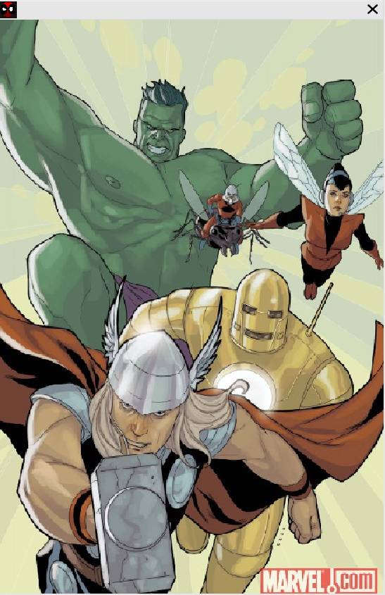

Xestión de coleccións

Esta pantalla permite xestionar as coleccións da librería (inserción, modificación e borrado). Ademais,
móstranse os campos de cada colección tras seleccionala na táboa. Os campos son os seguintes:
- ID: identificador único da colección. Campo obrigatorio que non pode coincidir co ID da outra colección.
- Nome:campo obligatorio de lonxitude máxima de 200 caracteres.
- Imaxe
A imaxe pódese elixir a partir dun ficheiro gardado no equipo e se mostra ao usuario tras premer no botón "Ver".

NOTA: se ao borrar unha colección esta ten cómics, só se pode borrar se o usuario escolle borrar tamén os seus cómics.